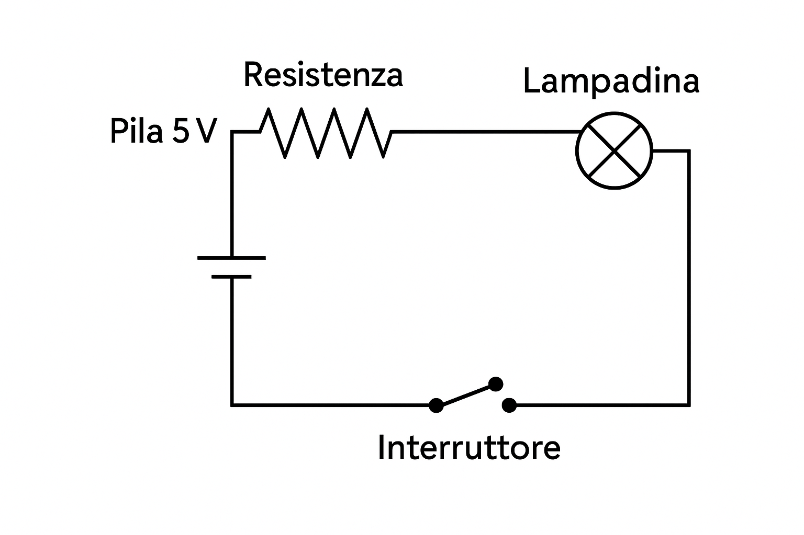
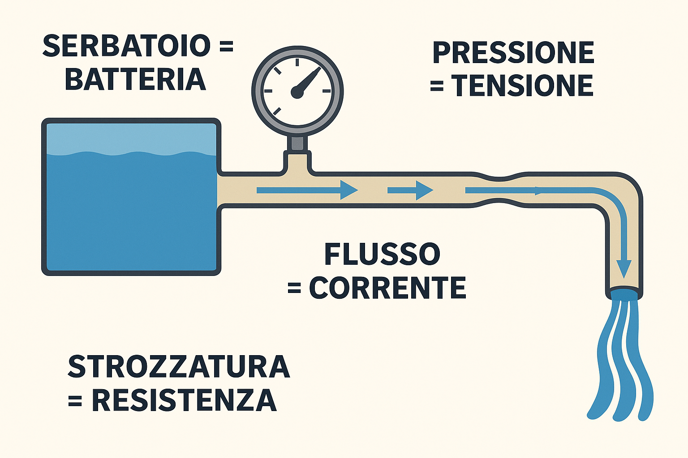
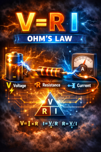

Corrente, Tensione e Circuito Elettrico
Immagina l’elettricità come un “traffico” di minuscole particelle cariche, gli elettroni, che possono muoversi dentro certi materiali. Quando questo movimento è organizzato e continuo parliamo di corrente elettrica. In altri termini, la corrente elettrica è la quantità di carica (elettroni) che passa in un circuito nell’unità di tempo.
L’unità di misura è l’ampere (A) e corrisponde a un coulomb al secondo.
### Relazione tra corrente e carica
La corrente elettrica ( I ) è definita come la variazione della carica ( Q ) nel tempo:


Per far muovere quelle cariche serve una spinta. Quella spinta si chiama tensione o differenza di potenziale ed è l’energia disponibile per ogni unità di carica affinché compia un percorso. Si misura in volt (V) e puoi pensarla come la pressione che mette in moto l’acqua. Se la tensione è alta, gli elettroni hanno più energia per attraversare un componente; se è bassa, la spinta è modesta. In termini fisici, 1 V = 1 J/C: un volt è un joule di energia per coulomb di carica.

Non è diverso dall’idea di una portata d’acqua in un tubo: più elettroni scorrono in un secondo, maggiore è la corrente.
Analogia con il flusso di acqua in un tubo.

Tra la spinta e il flusso c’è di mezzo la “strada” che le cariche devono percorrere. I materiali non sono tutti uguali: alcuni lasciano passare gli elettroni con facilità (conduttori), altri oppongono resistenza (isolanti o, più spesso, resistenze controllate). La relazione più celebre che lega questi elementi è la legge di Ohm: V = I · R.

A parità di tensione, una resistenza grande lascia passare poca corrente; a parità di resistenza, più volt significano più ampere.
Un circuito elettrico è il percorso chiuso che permette alla corrente di andare dal polo positivo a quello negativo di una sorgente. “Chiuso” è la parola chiave: senza un anello completo, le cariche non possono fluire in modo continuo. La sorgente (una batteria, un alimentatore) stabilisce la differenza di potenziale; i conduttori offrono il cammino; i componenti lungo la strada — lampadine, resistenze, sensori, motori — trasformano l’energia elettrica in altre forme utili. Se apri l’anello con un interruttore, interrompi il flusso; se lo richiudi, la corrente riprende immediatamente a scorrere.
In quest’ottica, un corto circuito è un percorso troppo facile e quasi senza resistenza tra i poli: la corrente diventa enorme con rischi di surriscaldamento e danni.
Nella pratica quotidiana incontriamo due modi diversi di “erogare” la tensione.
La corrente continua (DC), tipica delle batterie e dei microcontrollori come l’ESP32, mantiene costanti polarità e valore, al netto di piccole ondulazioni.
La corrente alternata (AC), tipica della rete domestica, fa oscillare periodicamente la tensione e, di conseguenza, la direzione del flusso medio della corrente.
Ci sono strumenti che permettono di verificare e misurare i valori di corrente (amperometro), tensione (Voltmetro) e Resistenza (Ohmmetro). In seguito vedremo il funzionamento del multimetro che in un singolo dispositivo permette di fare le tre misure dette sopra.
Esperimenti
1 - Output su un GPIO
Si scriva un programma in modo da alternare uno zero (LOW) e un uno (HIGH) su un pin GPIO (ad esempio GPIO4). Si metta una pausa di almento un paio di secondi tra una alternanza e l'altra. Si verifichi quindi con il multimetro, messo in modalità di lettura della tensione continua, che il valore letto dallo strumento sia 0.0 e 3.3Volt a seconda di quello che scrivere su GPIO4.
I due puntali (rosso e nero) devo essere collegati sul pin di massa (GND) e GPIO4 del ESP32.

In figura con il simbolo V si intende il multimentro messo in modalità voltometro.
2 - collegamento di una resistenza
Si esegua il circuito come indicato in figura:

Ora il multimetro è usato in modalità Amperometro (lettura di corrente che scorre nel conduttore).
Con lo stesso programma di prima dovresto vedere corrente 0 ampere (A) quando sul pin GPIO4 pilotate uno 0, e un valore con GPIO4 a 1.
Con la resistenza da 220ohm, verificate che la corrente letta dallo strumento sia uguale a quella ricavata dalla formula.
ripetere la stessa misura con R=1kohm e R=10kohm.
Controllare sempre con la formula V=R*I.